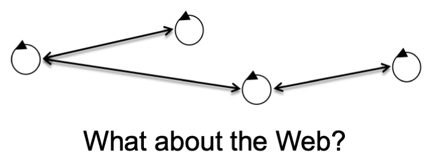
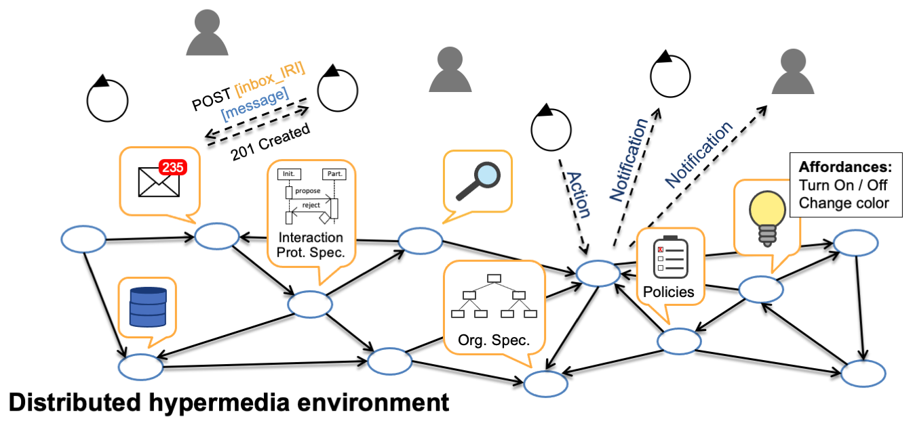
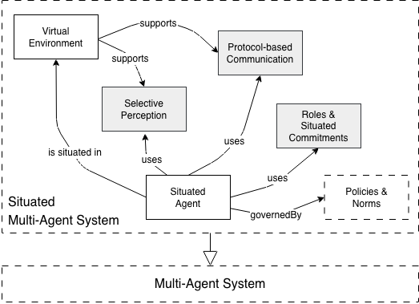
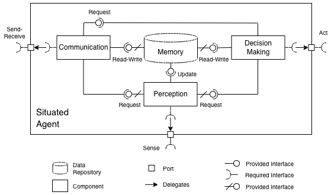
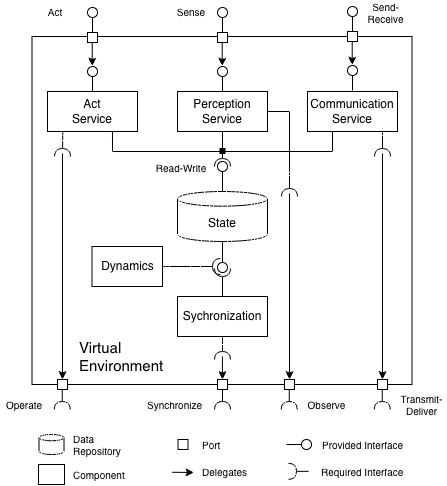

Advances in large language models (LLMs) that can follow instructions and use tools have renewed interest in autonomous agents and multi-agent systems. Like previous generations of agents, LLM-based agents are designed for specific tasks, highlighting the need for open networks of agents that complement each other's abilities to tackle more complex problems. New protocols are rapidly emerging to allow agents to discover and use tools, or to discover and interact with other agents. Some of these protocols build on Web standards to promote interoperability, but their alignments, misalignments, and overlaps are unclear. This report synthesizes the large body of research on autonomous agents and multi-agent systems (MAS) to define a conceptual model for understanding Web-based MAS. We use this conceptual model to classify existing technologies and frameworks, to identify relevant standards within the W3C, and to discover standardization gaps (if any).
The vision of intelligent agents on the Web is almost as old as the Web itself: in a keynote at WWW'94, Sir Tim Berners-Lee was noting that documents on the Web describe real objects and relationships among them, and if the semantics of these objects are represented explicitly then machines can browse through and manipulate reality. This vision was articulated more fully in the 2001 Semantic Web paper [[SEMWEB01]] and is now closer to realization through the standardization of the Web of Things at the W3C and the IETF.
In the AI community, the vision of a world-wide open network of intelligent agents also emerged in the '90s. In 2002, the AgentCities initiative was reporting a network of 41 agent platforms deployed in 21 countries [[WILLMOTT02]], which grew to 60 registered platforms in 2003 [[DALE03]] and 160 by 2005 [[JADE05]]. This network was based on standards developed by the Foundation for Intelligent Physical Agents (FIPA) but declined after the mid-2000s as industry attention shifted toward Web services. In parallel with AgentCities, the DARPA Control of Agent-Based Systems (CoABS) research program investigated the control, coordination, and management of large systems of autonomous software agents in military applications. Its central middleware, the CoABS Grid [[COABS1]], integrated heterogeneous agent-based systems, object-based applications, and legacy systems.
The DARPA CoABS program demonstrated the practical utility of agent technologies in large-scale deployments, while also highlighting significant challenges — for example, enabling agents to dynamically identify and interpret information sources [[COABS2]]. To address such issues, DARPA launched the Agent Markup Language (DAML) research program, which extended existing Web standards and laid the groundwork for the Web Ontology Language (OWL), Semantic Markup for Web Services (OWL-S), and other cornerstones of the Semantic Web. The DAML program advanced the original vision of the Web as an information space for both people and intelligent agents, and encouraged a shift from custom-built MAS middleware (e.g., CoABS Grid or FIPA platforms) to leveraging the Web's existing infrastructure. Such Web-based MAS received significant attention over the years, especially in the early 2000s with the advent of service-oriented computing [[SINGH06]].
Recent years have brought renewed interest in Web-based MAS — as evidenced by the Dagstuhl Seminar 21072 (Feb. 2021) and Dagstuhl Seminar 23081 (Feb. 2023) on "Agents on the Web", which led to the creation of the W3C Autonomous Agents on the Web (WebAgents) Community Group. A key enabler for this renewed interest is the Web of Things, which provides new practical use cases for Web agents and realizes several visionary ideas anticipated in the original Semantic Web paper [[SEMWEB01]]. Another key enabler is the recent progress in LLM-based agents that can follow instructions and use tools: just like previous generations of agents, LLM-based agents are designed for specific tasks, underscoring the need for open networks in which agents complement one another's abilities to solve more complex problems. New protocols and frameworks are emerging to support LLM-based agents to discover and use tools, or to discover and interact with other agents — many of them explicitly building on Web standards to foster interoperability (e.g., see the Model Context Protocol, Agent2Agent Protocol, Agent Network Protocol, Eclipse LMOS).
A multi-agent system (MAS) has several distinguishing features. One key feature is decentralized control, where each agent makes its own decisions and controls its own behavior — yet the MAS as a whole exhibits coordinated behavior to achieve system-level design objectives. Another key feature is that capabilities, knowledge, and resources are distributed among agents, which creates inter-dependencies: agents participate in a MAS because they need to interact with one another to solve problems that would otherwise exceed their individual capacities. Without such inter-dependencies, the MAS would be a collection of isolated agents — and would not constitute a system at all.
A non-trivial MAS therefore consists of more than just agents: for example, it may also include the tools that agents use to achieve their goals, the protocols through which they interact, and the policies or norms that govern their behavior. In research on Engineering MAS, these concerns have been organized along four conceptual dimensions [[DEMAZEAU95]]:
These conceptual dimensions help organize the complexity of non-trivial MAS — and are particularly relevant when designing Web-based MAS [[HMAS19]]: they offer a broader conceptual view of MAS (broader than just agents) while also defining the scope of the design space. For example, [[[#mas-web-transport-layer]]] shows a MAS modeled as agents that exchange messages. In this view, the Web is reduced to a message transport layer, an early perspective in research on Web-based MAS (see Section [[[#agents-web-services]]]). However, the Web was not designed as a transport layer (see Section 6.5.3 in [[FIELDING00]]).

In contrast, a broader conceptual view of MAS enables deeper integration with the Web: instead of limiting the Web to a transport layer for agent messages, it can leverage the Web as an application layer for MAS [[HMAS19]]. For example, [[[#mas-web-application-layer]]] shows a MAS that incorporates concepts from all four dimensions mentioned above. In this view, the Web serves as the application layer for the agent environment — for example, providing agents with shared tools, resources, and governance mechanisms. This perspective expands the design space for Web-based MAS and aligns more closely with the Web's original purpose and capabilities.

This section discusses how architectures for MAS can integrate with the Web architecture [[WEBARCH]]. Section 3.3.1 defines design goals for Web-based MAS to motivate why alignment with the Web architecture is desirable. Section 3.3.2 introduces architectural patterns that describe MAS in terms of components and connectors, facilitating their mapping to the Web architecture [[FIELDING00]]. Section 3.3.3 presents a set of architectural constraints that specify the roles and features of components and connectors in a MAS to ensure alignment with the Web architecture.
We distinguish between agent-level and system-level design goals for Web-based MAS.
| Design Goal | Description |
|---|---|
| Situatedness | The agent interacts with its hypermedia environment directly through perception and action, and responds in a timely fashion to sensory input. |
| Embodiment | The agent is represented explicitly in the hypermedia environment, allowing end-users and other agents to discover and interact with it. |
| Value Alignment | The agent acts in ways that are consistent with the goals, preferences, and interests of its end-user, and that respect stakeholder values and norms. |
Situatedness is central to distinguishing agents from other types of programs [[FRANKLIN96]]. Embodiment enables agents to discover and interact with one another on the open Web. Value alignment is fundamental not only to intelligent agents and AI systems [[RUSSELL19]][[WEF24]], but also to Web user agents in general (see the Technical Architecture Group's draft note on Web User Agents).
| Design Goal | Description |
|---|---|
| Scalability | The system can support growing numbers of end-users, agents, tools, and other resources across geographical and organizational boundaries. |
| Interoperability | The system uses Web standards to enable the integration of components developed independently, and to support communication and interaction with other systems. |
| Extensibility | The system can be expanded with new functionality and resources. |
| Evolvability | The system can accommodate changes at run time without disrupting existing functionality. |
| Discoverability | The system enables end-users and agents to discover the rest of the system starting from a single entry URL. |
| Resource Monitoring | The system enables the selective monitoring of resources, allowing agents and end-users to perceive and react to relevant changes. |
| Transparency | The system enables the representation, inspection, and reproduction of autonomous behaviors and interactions. |
| Security | The system provides sufficient assurance for the autonomous discovery of and interaction with agents, tools, and other resources. |
Scalability, interoperability, extensibility, and evolvability are central goals for designing MAS that can be deployed at scale on the open Web. These goals also motivated many of the key architectural decisions underpinning the Web itself [[TBL89]][[FIELDING00]]. The central hypothesis of this report is that aligning MAS architectures with the Web architecture enables them to inherit these desirable non-functional properties.
Discoverability is essential for any open system, as demonstrated by the Web itself. Resource monitoring is necessary for agents to perceive the hypermedia environments in which they are situated. Transperency is a prerequisite for accountability, explainability, and trust. Security is a fundamental requirement that is even more critical if agents are to discover and use tools, or to discover and interact with one another on the open Web.
An architectural pattern specifies a general solution to a recurring design problem. [[[#pattern-language]]] shows a set of architectural patterns for situated MAS adapted from [[WEYNS10]]. The patterns are described using components and connectors as the main architectural elements.
A component is "an abstract unit of software instructions and internal state that provides a transformation of data via its interface" [[FIELDING00]]. A connector is an abstract mechanism that mediates interaction among components [[TAYLOR10]]. We use component-and-connector models because they facilitate alignment with the design of the Web architecture, as captured by the Representational State Transfer (REST) architectural style [[FIELDING00]]: REST defines a set of architectural constraints that apply to the components and connectors of a distributed hypermedia system — and, in addition, treats data elements as first-class architectural elements subject to the same constraints. We return to REST in Section [[[#architectural-constraints]]].
The original pattern language introduced by Weyns includes five patterns [[WEYNS10]]: situated agent, virtual environment, selective perception, protocol-based communication, and roles & situated commitments. In this report, we focus on the first two — the basic patterns — and leave the others for future work within the Autonomous Agents on the Web (WebAgents) Community Group. The language may also be extended with new architectural patterns, such as the policies & norms pattern shown in [[[#pattern-language]]].

In the following, we present the two basic patterns using UML component diagrams. We give concise overviews of the each pattern and illustrate their application in both modern LLM-based MAS and classical MAS (for detailed descriptions, see [[WEYNS10]]). We then discuss network-based connectors, focusing on Web interactions.

The situated agent pattern shown in [[[#situated-agent]]] includes a single data repository (Memory) and three components: Perception, Decision Making, and Communication. The Memory repository, accessible to all three components, stores both the agent's internal state and state that may be shared with other agents. This state may be static (e.g., a predefined list of contacts) or dynamic (e.g., a perceived change in the environment). Perception is responsible for sensing and interpreting run-time information from the virtual environment — and supports selective perception, enabling the agent to focus on information relevant to its current tasks. Decision Making is responsible for realizing the agent's tasks by invoking actions in the virtual environment. Communication is responsible for handling interactions with other agents.
One alteration we introduce relative to Weyns' original pattern is an explicit connection between Communication and Decision Making, allowing the latter to trigger communication acts. This configuration is common in more recent agent architectures, such as those employing information protocols [[KIKO23]].
The situated agent pattern applies naturally to classical agent architectures, such as Belief-Desire-Intention (BDI) agents [[JACAMO20]], which typically make use of all components. In contrast, many current implementations of LLM agents focus primarily on the Decision Making and Memory components: Communication may be implicit to Decision Making and Perception, and in many cases Perception may also be implicit — for example, when the agent perceives its environment only through observations returned by its actions.

The virtual environment pattern shown in [[[#virtual-environment]]] describes an adaptation layer that bridges the agent's level of abstraction with its deployment context. This adaptation layer can be implemented, for example, by a Model Context Protocol (MCP) server, a Universal Tool Calling Protocol (UTCP) server, or a WoT Thing Description Directory. The virtual environment exposes to agents a set of provided interfaces through which they can sense, act, or exchange messages (top of [[[#virtual-environment]]]), and may also define a set of required interfaces for interacting with the underlying infrastructure (bottom of [[[#virtual-environment]]]). For instance, an MCP server may wrap the HTTP endpoint of an industrial robot (the Operate required interface in [[[#virtual-environment]]]) to expose a set of tools accessible to LLM agents.
Some virtual environments may include tools that maintain State and implement their own Dynamics, or host Digital Twins that mirror the state of physical assets through the Synchronization component.
So far, we have examined components and their interfaces for situated agents and virtual environments. Connectors specify how these components interact. In this report, we are particularly interested in cases where such interactions are realized through the network-based connectors that rely on Web standards and technologies. One of the objectives of this report is to identify existing standards for these connectors and to highlight potential gaps where further standardization may be needed.
This section introduces three design principles that constrain the roles and features of components, connectors, and data elements in a Web-based MAS to ensure alignment with the Web architecture. We refer to Web-based MAS that follow these principles as Hypermedia MAS.
The principles are adapted from — and discussed in detail in — [[CIORTEA19]]. Their theoretical underpinning is the REST architectural style [[FIELDING00]], but they extend beyond REST to address requirements specific to agents, such as Resource Monitoring (see also [[KHARE04]][[FIELDING17]]).
Principle 1 (Uniform resource space): All entities in a Hypermedia MAS, and the relations among them, should be represented in a uniform, resource-oriented manner consistent with the Web architecture.
The core idea behind this first principle is to project the state of a Web-based MAS into a uniform, resource-oriented, and distributed hypermedia environment (cf. [[[#mas-web-application-layer]]]). Resources in this environment may include not only documents (or information resources) — such as agent cards, FOAF profiles, or WoT Thing Description Documents — but also processes (e.g., agents, tools, services), real-world objects (e.g., devices), or abstract concepts (e.g., ontological terms). We refer to this broader category of entities as non-information resources [[COOLURIS]].
Having a uniform, resource-oriented representation provides consistent access to all these entities and enables linking and reuse across systems. This principle promotes Scalability by enabling seamless distribution across the Web: agents can use hyperlinks to discover and interact with other entities within and across Hypermedia MAS. It also supports Interoperability, Extensibility, and Evolvability through uniform hypermedia views of heterogeneous components.
The trade-off is decreased efficiency: components must translate between their internal data representations and the uniform representations exposed via their interfaces, which are necessarily less optimized for the specific needs of individual components.
Principle 2 (Single entry point): A Hypermedia MAS should expose one or more entry URLs from which the rest of the system and the means to participate in it can be discovered through hyperlinks.
The core idea is to maximize the usage of hypermedia in order to minimize coupling within the MAS, which promotes Discoverability and Evolvability — allowing agents to join and navigate the system dynamically with minimal prior configuration. This principle draws directly on the Hypermedia As The Engine of Application State (HATEOAS) constraint in REST [[FIELDING00]].
Principle 3 (Observability): A Hypermedia MAS should enable agents to selectively monitor and receive updates about relevant resources and events in their virtual environments using Web standards.
This principle enables Situatedness and Resource Monitoring, and improves the Scalability of the overall Hypemedia MAS: selective perception allows agents to focus only on those parts of the distributed hypermedia environment that are relevant to their current tasks, enabling them to handle larger environments while reducing the load on the underlying hypermedia infrastructure.
| Relevant Concepts | Agent Interaction | Tool Use | Identifiers | Descriptions | Discovery Mechanisms | Arch. Style | |
|---|---|---|---|---|---|---|---|
| MCP | Tool, Resource, Prompt | N/A | Function calling | Strings (Tools and Prompts),URIs (Resources) | Tool definition, Resource descriptions, Prompt definitions,(JSON) | Directories (via */list) | Client-Server with streaming RPC connectors (JSON-RPC 2.0, Streamable HTTP) |
| A2A | Agent Card, Task | Task invocation | N/A | Strings? | Agent Card, Task description,(JSON) | Well-known URIs,Directories | Async. Client-Server with streaming RPC connectors and webhooks (JSON-RPC 2.0, HTTP+SSE) |
| ANP | Agent,Agent Description,Communication Protocol | Communication protocols with protocol negotiation | N/A | W3C DID with custom Web-based Agent DID Method | Agent Description (RDF/JSON-LD) | Directories | Peer-to-Peer?(WebSocket subprotocol) |
| LMOS | Agent, Agent Group, Tool, Agent Description, Tool Description | Message passing?(in principle: TD interaction affordances) | Property Affordances,Event Affordances,Action Affordances(W3C WoT TD) | Uniform identifiers (IRIs, W3C DIDs) | Agent Description, Tool Description(W3C WoT TD; JSON, RDF/JSON-LD) | DNS-SD/mDNS,Well-known URIs,Directories(W3C WoT Discovery) | W3C WoT Arch.? with protocol bindings for HTTP and WebSocket subprotocol |
| FIPA | Agent,Agent Directory,Service Directory,Agent Communication Language,Interaction Protocol | FIPA Agent Communication Langauge,FIPA Agent Interaction Protocols | N/A | FIPA Agent Name | FIPA Agent Identifier Description | Directories | TODO |
| hMAS | Agent, Artifact, Agent Body, Workspace, Signifier, Role, Group, Organization, Resource Profile | Message passing,Signifiers for agent body affordances | Signifiers(W3C WoT TD, hMAS ontology) | Uniform identifiers (IRIs, W3C DIDs) | Resource Profile(W3C WoT TD or hMAS ontology; RDF/Turtle) | Hypermedia crawling,Search engines,Directories | Async. Client-Server with REST connectors (HTTP) and brokered pub/sub (W3C WebSub) |
| Multi-Agent MicroSevices (MAMS) | Agent, Agent Body, Resource, Microservices | FIPA ACL (over HTTP), REST, HTTP API, JMS | REST, HTTP API, JMS, W3C WOT TD | URIs (Agents, Agent Bodies, Resources) | Agent Bodies (JSON, JSON-LD (inc W3C WoT Hypermedia Controls Ontology), HAL) | Service Registries (Netflix Eureka), Link Crawling, Link Sharing | Microservices Architecture, Event Driven Architecture, REST |
Principle 1 (Uniform resource space) states that all entities in a Web-based MAS should be represented in a uniform, resource-oriented manner consistent with the Web architecture. The W3C Recommendation for the architecture of the World Wide Web provides several constraints and good practices for identifying resources [[WEBARCH]]. We highlight below the ones most relevant in this context.
A recommended practice is to identify resources using IRIs (see Section 2.1. Benefits of URIs), which have global scope and can be referenced independent of context — thereby promoting Interoperability. IRIs can identify both information resources (documents, agent cards, etc.) and non-information resources (agents, devices, etc.) [[COOLURIS]].
An IRI identifies a single resource (see Constraint: URIs Identify a Single Resource), and the IRI owner is responsible for maintaining the semantic validity of that identifier over time [[FIELDING00]]. These two constraints help prevent identifier collisions and semantic drift in long-lived systems, which is essential for Extensibility and Evolvability.
IRIs should be opaque (see Good practice: URI Opacity), meaning that agents should not attempt to infer properties of referenced resources from the IRIs themselves. Similarly, while it is common to follow best practices for IRI design when developing APIs (e.g., using containers to group similar resources), such design decisions cannot be assumed to be understood outside the scope of a specific service.
Another good practice is that deferenecing an IRI should return a representation of the identified resource (see Good Practice: Available representation). If the identified resource is a non-information resource, such as a person or a software agent, the IRI should return a representation of an information resource that describes the targeted resource [[COOLURIS]]. This practice is common when representing knowledge on the Web, and promoted by specifications such as WebID [[SOLID-PROTOCOL]] and Decentralized Identifiers [[DID-1.1]].
We discuss additional constraints and best practices in Section 6. Verifiable Credentials.
A number of standards and initiatives exist that address — either explicitly or implicitly — the identification of agents and other entities of interest. In the following, we focus on agents and tools.
The standardization work of the Foundation for Intelligent Physical Agents (FIPA) is one of the earliest and most influential initiatives aimed at designing open and interoperable networks of agents. FIPA introduces agent names as immutable, unique identifiers that remain valid throughout an agent's lifetime [[FIPAARCH]]. Agent names are independent of the issuing party, yet still verifiable for authenticity. Importantly, they do not encode any properties of the agent. In these respects, FIPA agent names are aligned with the constraints and best practices outlined previously for identifying resources.
Where FIPA agent names differ from IRI-based identification approaches is in their use of a specific syntax: they are constructed from an agent's local identifier and the address of its home platform (i.e., the platform on which the agent was created). For example, the agent name `bob@example.org` identifies the agent `bob` hosted on the platform `example.org`. Using such custom identifiers for agents therefore requires the development and deployment of an Internet-scale agent name resolution service — an effort that can be avoided by using IRIs instead.
The Agent2Agent (A2A) Protocol is an open standard designed to facilitate communication and interoperability between heterogeneous agent implementations. In the current specification, an agent's identity is defined by its name, description, and provider information. The agent's name is a human-readable identifier (e.g., "Example Agent"), while the description is a human-readable string characterizing the agent (e.g., "An agent that can generate random example quotes"). Provider information includes a URL for the provider's website or relevant documentation, and a human-readable name of the provier's organization (e.g., "ACME Inc.").
This design is consistent with earlier FIPA-style agent identification approaches, in which agent identity is represented by local identifiers contextualized by a provider or hosting platform rather than by globally scoped identifiers. While the inclusion of provider information supports discovery and interaction across organizational boundaries, defining agent identity in terms of human-readable names and descriptions limits the ability to reference agents as first-class entities in a global context. This approach simplifies implementation and configuration in closed settings but constrains interoperability in open settings. Extending the agent information with an agent IRI would enable globally unique and uniform identification.
The Agent Network Protocol (ANP) is an open-source communication protocol that enables agents to discover and interact with one another on the Internet. ANP is designed for interoperability in decentralized settings and identifies agents using W3C Decentralized Identifiers (DIDs) [[DID-1.1]]. ANP defines its own DID method for identifying Web-based agents, named `did:wba`, which extends the `did:web` method specification [[DIDWEB]] with additional constraints on DID documents and cross-platform authentication processes (see did:wba method specification). By adopting DIDs, ANP is therefore directly aligned with the IRI-based identification approach described in this report and addresses cross-platform identification and authentication in a decentralized manner, with the associated requirement to support DIDs and the `did:wba` DID method.
The Eclipse Language Model Operating System (LMOS) is an open protocol that enables agents to discover, interact, and collaborate on the Internet. LMOS builds on W3C standards and specifically the Web of Things architecture [[wot-architecture11]]. Similar to ANP, LMOS uses Decentralized Identifiers [[DID-1.1]] to identify not only agents but also tools. Unlike ANP, LMOS uses the `did:web` method specification as is [[DIDWEB]], deferring authentication processes to declarative security definitions via the WoT Thing Description [[wot-thing-description11]]. We discuss security mechanisms in Section [[[#security-and-privacy]]].
The Model Context Protocol (MCP) is an open-source standard for connecting LLM-based applications to external systems. In MCP, tools are "executable functions that AI applications can invoke to perform actions (e.g., file operations, API calls, database queries)". In the current specification (`version 2025-11-25`), a tool is identified by a name, which is a string identifier that is unique within an MCP server. In addition, some systems use string labels for MCP servers that further qualify tool references (e.g., OpenAI Response API v1), similar to the provider information in A2A (see Section [[[#the-agent2agent-a2a-protocol]]]). MCP thus follows a design rationale similar to A2A that prioritizes simplicity in closed settings but constrains interoperability in open settings. Extending tool definitions with tool IRIs would enable globally unique and uniform identification.
The Universal Tool Calling Protocol (UTCP) is an open standard that enables agents to discover and call tools directly. UTCP extends the OpenAPI specification [[OPENAPIS-3.1.0]] with agent-focused enhancements, including bindings to different protocols used for transport (e.g., HTTP, CLI, gRPC, GraphQL, MCP). We discuss in more detail the UTCP approach to tool use in Section [[[#agent-environment-interaction]]]. Similar to MCP, a UTCP tool is identified by a name, which is a string identifier. The responsibility of managing tool repositories is left to the UTCP client. For tool identification, UTCP thus follows a design trade-off similar to MCP — simplifying tool referencing in closed settings rather than supporting globally unique and uniform identification.
The initiatives surveyed in this section span a spectrum of design choices, from closed to open settings. At one end, protocols like MCP and UTCP use string identifiers scoped to individual servers — a design that prioritizes simplicity and developer convenience in closed settings. At the other end, ANP and Eclipse LMOS use DIDs [[DID-1.1]] to enable globally unique, decentralized identification suited to open settings. Solid uses HTTP IRIs for centralized identification in a decentralized Web, and A2A occupies a middle ground with provider-qualified names. This diversity reflects legitimate differences in system requirements rather than a gap in standardization. However, a clear pattern emerges: as systems move toward openness and decentralization, alignment with Web standards and practices for identification becomes increasingly relevant. For systems that anticipate evolution towards open and decentralized participation, adopting IRI-based identification from the outset may reduce future integration costs.
Profiles are information resources (i.e., documents) that describe non-information resources in a Web-based MAS, such as agents and tools.
The need for profiles arises from the good practices defined in the W3C Recommendation Architecture of the World Wide Web: When a non-information resource is identified by an IRI, dereferencing that IRI should return a representation of an information resource that describes the identified resource ([COOLURIS]; see Section 4. Identification). Profiles support this practice, by acting as the information sources through which identifiable agents, tools, and other (non-informational) MAS entities are described and accessed on the Web. In line with Principle 1 (Uniform resource space), this access is consistent and enables linking and reuse of MAS entities accross the system.
| Interaction | Capabilities | Locality | Monitoring | Coordination | |
|---|---|---|---|---|---|
| FOAF Personal Profile Document | (Mbox) | — | — | Project (?) | Groups, Member |
| A2A AgentCard | A2A Skills | A2A Capabilities (e.g., streaming, pushNotifications) | — | — | — |
| LMOS Agent Description | — | W3C WoT Interaction Affordances | — | W3C WoT Event Affordances (?) | — |
| ANP Agent Description | ANP Potential Action | — | — | — | — |
| MCP Client Capabilities Description | — | MCP Capabilities (e.g., elicitation, sampling) | — | — | — |
| FIPA Agent Identifier Description | FIPA ACL Message Structure, Communicative Acts | (Interaction Protocols, Ontologies, Languages) | — | — | Interaction Protocols |
| hMAS Resource Profiles | hMAS Signifier, Behavior Execution, Action Execution | Abilities (?) | hMAS Workspace, JaCaMo Bodies | JaCaMo Bodies | — |
| MAMS Agent Bodies | FIPA ACL Message Structure, Communicative Acts | [TBA] | [TBA] | [TBA] | [TBA] |
Where Section 8 examines how agents communicate with one another, this section examines how agents perceive and act in a shared, Web-accessible environment. This corresponds to the environment dimension of the four-dimension MAS model introduced in Section 3.2 and grounds the virtual environment pattern from Section 3.3.2 in concrete standards and protocols. The section also connects to three agent-level design goals from Section 3.3.1: Situatedness, which requires that agents interact with their environments directly through perception and action; Embodiment, which requires that agents be represented as resources in the environment, discoverable and interactable by others; and Value Alignment, since the affordances an environment exposes govern what actions are possible and may encode normative constraints.
Three foundational concepts organize the discussion. An affordance is a relation between an agent's capabilities and the capabilities that the environment exposes: it specifies what the agent can do and how. The term is used here in the sense established by ecological psychology and design theory, but formalized as a machine-readable, discoverable description of an available interaction. A signifier is an observable cue embedded in the environment that indicates the availability of an affordance and the conditions under which it can be exercised. Perception and action are the two complementary channels through which a situated agent interacts with its environment: perception is the process of sensing the current state of the environment, while action is the process of modifying it. The situated agent pattern (see Section 3.3.2) treats these two channels as structurally independent, allowing agents to react to environmental changes without initiating an action.
Three paradigms of agent-environment interaction can be identified in the current landscape. In hypermedia-driven interaction, agents navigate and discover affordances at runtime by following hypermedia controls embedded in resource representations, requiring no prior knowledge of the environment's structure. In description-driven interaction, agents consume machine-readable interface specifications before invoking affordances, relying on out-of-band or pre-fetched descriptions. In protocol-driven interaction, agents use a standardized invocation protocol that manages tool enumeration and invocation through a dedicated server. These paradigms are not mutually exclusive; several of the initiatives surveyed below combine elements of more than one.
Agent-environment interaction in a Web-based MAS requires, at minimum, three things to be addressed simultaneously: a description of what interactions are available and under what conditions, a protocol for invoking those interactions, and a mechanism for perceiving changes in environmental state independently of invocation. The initiatives surveyed in this section address one or more of these concerns, and are organized accordingly. Subsection 9.1.1 covers affordance description: the standards and models that represent what interactions an environment exposes and how they are semantically characterized. Subsections 9.1.2 through 9.1.4 cover invocation: the protocols and frameworks through which agents call tools and services, from standardized open protocols to widely deployed software frameworks. Subsection 9.1.5 covers observability: the mechanisms through which agents receive updates about environmental state without initiating an action. Subsection 9.1.6 provides foundational context from classical MAS environments that predate the Web-native protocol stack but establish the conceptual baseline against which current approaches can be evaluated.
The initiatives surveyed vary significantly in standardization status and scope. Some, such as the W3C Web of Things Thing Description and WebSub, are W3C Recommendations. Others, such as MCP, UTCP, and the Agent Network Protocol, are open but not W3C-standardized protocols with varying degrees of deployment. A further group consists of software frameworks, such as LangChain or Microsoft Semantic Kernel, which are not standards at all but represent de facto conventions that shape how protocols are consumed in practice. Classical MAS frameworks such as CArtAgO and JADE predate the Web-native stack and are included for their architectural and historical relevance. The organization of the subsections follows this layer-based decomposition of the interaction stack and does not imply a ranking by importance, maturity, or degree of recommendation.
The W3C Web of Things (WoT) Thing Description specification [[wot-thing-description11]] defines a machine-readable vocabulary for describing the interaction affordances of a Thing, a term used broadly for any physical or virtual entity whose state can be observed or whose behavior can be invoked. The WoT architecture [[wot-architecture11]] defines three affordance types, each corresponding to a distinct mode of agent-environment interaction. The WoT affordance model is adopted by Eclipse LMOS for both agent and tool descriptions and informs the hMAS ontology's treatment of artifact descriptions.
A Property Affordance describes a readable, and optionally writable and observable, attribute of a Thing. Reading a property retrieves a representation of the current state of the corresponding resource; writing a property modifies that state; observing a property establishes a subscription to state changes delivered via the underlying protocol binding. Each property carries a JSON Schema description of its value and may be annotated with JSON-LD type references to external vocabularies, enabling semantic interpretation. The observable flag on a property connects it directly to Principle 3 (Observability) and to the push-based perception mechanisms surveyed in Section 9.1.3. Property affordances represent the primary formalized mechanism for proactive environment monitoring in the landscape covered by this report.
An Action Affordance describes an invocable behavior of a Thing that may have side effects on the environment or on the physical world. Semantically, an action is distinct from a property write in that it models a process that takes time, may be asynchronous, may produce errors, and whose lifecycle can be tracked. The specification provides optional safe, idempotent, and synchronous flags that characterize the behavior, and defines queryaction and cancelaction operations for status querying and cancellation of ongoing invocations. This execution model has direct relevance to agentic scenarios involving long-running tool invocations, such as code execution, robotic control, or database operations.
An Event Affordance describes an asynchronous notification that a Thing can emit: a state change, an alert, or any occurrence of interest to agents monitoring the environment. Event affordances formalize the push-based perception channel: an agent subscribes and receives notifications without polling. Each event affordance carries a schema for the notification payload and forms specifying how to subscribe and unsubscribe over the chosen protocol binding. This is the standards-based realization of Principle 3 (Observability) in the WoT architecture.
The forms element within each affordance is the mechanism by which WoT Thing Descriptions abstract over transport heterogeneity. A form specifies the target URL, the protocol operation type (such as readproperty, invokeaction, or subscribeevent), the HTTP method or protocol-equivalent, and the content type. A single affordance may carry multiple forms for different protocols, enabling runtime binding selection. Binding templates are defined for HTTP [[wot-binding-http]], CoAP [[wot-binding-coap]], and MQTT [[wot-binding-mqtt]], with community-maintained extensions for WebSocket, Modbus, and other protocols. This architecture directly supports the Interoperability design goal across heterogeneous deployment contexts. In addition, WoT Thing Descriptions carry a links element for connecting a description to related resources and vocabularies, and the WoT Discovery mechanism enables agents to locate Thing Descriptions from a directory URL, realizing Principle 2 (Single Entry Point) within the WoT architecture.
Eclipse LMOS [[LMOS]] builds directly on the WoT architecture and uses WoT Thing Descriptions as the native format for both agent and tool descriptions. From the agent-environment interaction perspective, LMOS exposes tool affordances through the full WoT interaction affordance model: Property Affordances, Action Affordances, and Event Affordances, with protocol bindings for HTTP and WebSocket. LMOS thus represents the current initiative most closely aligned with the WoT affordance model as an agent-tool interaction standard.
The hMAS ontology extends the WoT affordance model with an agent-oriented layer centered on the concept of the Signifier [[CIORTEA19]][[HMAS19]]. Where a WoT Thing Description describes what a Thing can expose, an hMAS Signifier describes what a specific agent can and is permitted to do in a specific context. A Signifier links three elements: an affordance, typically a WoT interaction affordance; a set of ability conditions specifying the capabilities an agent must possess in order to use the affordance; and a set of context conditions specifying when the affordance is available given the agent's role, organizational membership, or workspace state. This structure makes the affordance model normatively aware: an agent reading an hMAS Signifier learns not only how to invoke an affordance but also whether it is appropriate to do so given its current context.
Signifiers are embedded in Resource Profiles of artifacts and workspaces (see Section 5), which agents traverse hypermedia-style from a workspace entry point. This traversal is the primary mechanism by which the hMAS architecture realizes Principle 2 (Single Entry Point) and Principle 3 (Observability): starting from a single entry URL, an agent can navigate the workspace hypermedia graph and discover all actionable affordances, their ability conditions, and their context conditions, without prior configuration. Signifiers are expressed in RDF using the hMAS and WoT ontologies, enabling integration with Linked Data ecosystems and, in principle, machine-readable reasoning over affordance availability.
Yggdrasil is a server-side implementation of this model in which artifacts are Web resources described by WoT Thing Descriptions, workspaces are navigable hypermedia collections, and artifact operations are bound to HTTP endpoints. Yggdrasil demonstrates that the programming model established by CArtAgO (discussed in Section 9.1.4) can be realized in a Web-native manner, bridging classical MAS environment programming and Hypermedia MAS architecture.
The two approaches described above address affordance description, invocation, and observability within a single integrated model, grounded in W3C standards and the REST architectural style. The following two approaches address affordance description and invocation as their primary concern, without a native observability model or semantic annotation layer, and are widely deployed in production Web development and agentic AI systems respectively.
The OpenAPI Specification [[OPENAPIS-3.1.0]] is the industry-standard format for describing HTTP APIs, defining endpoints, HTTP methods, parameters, request and response schemas, and security mechanisms. It is the most widely adopted API description format in production Web development and serves as a practical baseline for tool descriptions in agentic systems: most tool generation pipelines begin from an OpenAPI specification and convert or wrap it into an agent-callable form. The UTCP specification (discussed below) explicitly extends OpenAPI as its starting point.
From an agent-environment interaction standpoint, OpenAPI describes the interface of a Web service but not its affordance semantics. An OpenAPI operation is a typed request-response pair; the specification provides no native concept of observable state, event subscription, or action lifecycle. Semantic annotations are possible through extension fields but are not standardized. This representational scope limits the degree to which agents can reason about OpenAPI-described tools without relying on natural language interpretation of documentation fields. Discovery is also not address natively: unlike WoT Thing Descriptions, which carry hypermedia links enabling navigation from a single entry point, OpenAPI specifications describe a fixed set of endpoints and provide no mechanism for runtime affordance discovery or environment traversal.
Practical evidence illustrates both the utility and the limitations of OpenAPI as a tool description baseline. Automated conversion of OpenAPI specifications to MCP tool definitions has been reported to succeed without manual intervention in the majority of cases, while a significant proportion require correcting specification errors before reliable invocation is possible. Separately, bidirectional conversion between OpenAPI specifications and WoT Thing Descriptions has been demonstrated, showing that the two formats are partially compatible but that richer affordance concepts such as event subscriptions and action lifecycle are not representable in OpenAPI without extensions.
The Universal Tool Calling Protocol (UTCP) [[UTCP]] extends OpenAPI 3.1 with agent-focused enhancements targeting multi-protocol tool deployment. A UTCP Tool Manifest lists available tools, their JSON Schema input and output descriptions, and their protocol bindings, which specify how each tool is concretely invoked over the designated transport. Supported bindings include HTTP, CLI, gRPC, GraphQL, and MCP. This binding model is analogous in purpose to WoT Thing Description forms but is scoped to tool-style invocations rather than to the full property, action, and event affordance model.
UTCP's primary design differentiators relative to MCP are explicit multi-protocol support without a proprietary server requirement, and client-side tool repository management. A UTCP tool may be any existing HTTP API, CLI program, or gRPC service, without the need to deploy a dedicated intermediary. UTCP does not currently define mechanisms equivalent to MCP Resources, Prompts, subscriptions, or server-initiated capabilities, and is narrowly focused on the tool invocation use case. Like MCP, UTCP uses string names as tool identifiers and does not provide semantic annotations.
The Model Context Protocol (MCP) [[MCP]] is an open standard for connecting LLM-based applications to external environments and has achieved significant adoption since its introduction, with a rapidly growing ecosystem of server implementations. MCP structures the environment into three primitive types: Tools, which are executable functions that agents can invoke; Resources, which are URI-addressed data accessible to agents; and Prompts, which are reusable, server-defined templates. The protocol uses a client-server architecture over JSON-RPC 2.0, with Streamable HTTP as the default transport since the 2025-03-26 specification revision, and stdio for local processes.
The core interaction operations are tools/list and tools/call for tool discovery and invocation; resources/list and resources/read for resource enumeration and access; and the optional resources/subscribe and notifications/resources/updated pair for resource change notification, which requires explicit capability negotiation and is not uniformly supported. All tool invocations are synchronous blocking remote procedure calls; no action lifecycle mechanism exists for status querying or cancellation. Two server-initiated capabilities invert the typical client-server flow: Sampling allows a server to request an LLM completion from the client, and Elicitation, introduced in the 2025-03-26 revision, allows a server to request structured input from the end user at runtime.
MCP deliberately omits semantic typing, representing tool descriptions as free-text strings processed by the language model rather than as machine-interpretable semantic annotations. This design prioritizes language model compatibility and developer convenience but limits the degree to which tool selection, composition, and verification can be automated without natural language interpretation. Empirical assessments of MCP tool descriptions in production servers have identified widespread quality issues, including ambiguous parameter descriptions, missing examples, and inconsistent naming, which measurably reduce invocation reliability in benchmarked tasks.
Major LLM providers have each defined a function calling or tool use API at the model inference level. These specifications determine the format of tool definitions provided to the model, the structure of model-generated invocation requests, and the format of results returned. Because MCP client libraries and most orchestration frameworks implement their tool-use logic over these APIs, understanding provider-level function calling is necessary context for evaluating the tool-use protocol stack as a whole.
The OpenAI tool use API defines tool definitions consisting of a name, a natural language description, and a JSON Schema for input parameters. The model returns a structured tool_calls array specifying tool name and JSON-encoded arguments; results are injected as messages in the conversation history. The Responses API extends this model with built-in tools for Web search, code execution, and file retrieval, and adds an explicit response-chaining mechanism for stateful multi-turn interactions. The Anthropic tool use API follows a structurally similar pattern, with distinctive support for computer use as a typed built-in tool schema specifying desktop automation actions, and a tool_choice parameter for constraining tool selection. The Google Gemini function calling API introduces native parallel function calling, allowing the model to request multiple tool invocations in a single response turn, alongside built-in code execution and search grounding tools integrated at the model level.
Despite independent origins, the three providers have converged on a common structural baseline: JSON Schema for input definitions, structured model-generated invocation requests, and conversation-history injection of results. MCP has accelerated this convergence by defining a tool description format that is mechanically compatible with all three provider APIs. However, the convergence remains shallow: output schemas, error handling, streaming of partial results, action lifecycle, and semantic annotations are unstandardized across providers. No provider API includes push-based observation, hypermedia navigation, or semantically typed affordances.
In parallel with invocation protocols, a class of tooling addresses the lifecycle concern of how tool descriptions are created, validated, and maintained at scale. Automated pipelines have been developed that convert existing API documentation, including natural language documentation, HTML pages, and OpenAPI specifications, into validated, agent-callable tool definitions, and that test generated descriptions against live endpoints. Such pipelines treat tool description quality as an engineering concern to be managed systematically rather than resolved manually. Protocol-agnostic tool registries provide lifecycle management including registration, versioning, execution tracking, and concurrency control, decoupled from any specific invocation protocol.
These pipelines and registries are not interoperability standards, but they document engineering practices that a standardization effort should account for. Quality assurance mechanisms, validation schemas, and registry interfaces are natural candidates for standardization if tool-use protocols are to scale in open settings.
LangChain defines a Tool abstraction with name, description, and callable function, bridged to provider-specific function calling via a bind_tools API. LangGraph extends this with a stateful graph execution model for multi-step tool use workflows in which nodes represent agent steps and edges represent conditional transitions, providing a framework-level answer to the tool composition problem discussed in the context of WoT action affordances. LangChain also provides adapters for consuming MCP servers as tool sources and for exposing LangChain tools as MCP servers.
Microsoft Semantic Kernel structures environment interaction through Plugins, collections of named functions with metadata for language model invocation, which may be defined in code, from OpenAPI specifications, or from MCP server connections. A Planner component supports LLM-driven automatic selection and chaining of plugins. Semantic Kernel is notable for its explicit integration with enterprise identity systems and organizational services, making it the most enterprise-oriented of the surveyed frameworks.
AutoGen models agents as conversational entities with tools registered via decorator patterns. Its multi-agent conversation model allows agents to delegate tasks to other agents within the same conversational framework, blurring the boundary between agent-to-environment and agent-to-agent interaction. CrewAI similarly provides a delegation mechanism implemented as a tool invocation, allowing one agent to invoke another as if it were a tool. Both frameworks expose MCP servers as tool sources through adapter libraries.
Principle 3 (Observability) requires that agents be able to selectively monitor resources and receive updates about relevant events using Web standards. The following subsections survey the concrete mechanisms available for realizing the push-based perception channel that the situated agent pattern requires. These mechanisms are the protocol-level instantiation of WoT Event Affordances and Property Monitoring operations, and correspond to the resources/subscribe mechanism in MCP.
WoT Property Affordances with the observable flag and WoT Event Affordances constitute the semantically richest and most standardized mechanisms: they provide machine-readable payload schemas, typed subscription operations with defined semantics (observeproperty, subscribeevent), protocol-agnostic binding selection, and integration with the WoT security model for authenticated subscriptions. W3C WebSub [[WEBSUB]] defines a publish-subscribe mechanism for Web resources over HTTP in which a subscriber registers interest at a hub and receives updated representations when the publisher posts new content. WebSub is protocol-agnostic at the content level and is supported as a WoT event binding and used in hMAS workspace event propagation. Server-Sent Events [[SSE]] provide a standardized, HTTP-native unidirectional event stream, simple to implement, compatible with HTTP proxies, and with automatic reconnection semantics; they are used as a transport in A2A and as a WoT event binding. WebSocket [[WEBSOCKET]] provides full-duplex, low-latency bidirectional communication over a single TCP connection, supporting richer interaction patterns such as server-initiated actions and streaming of partial results, and is used in WoT Thing Description bindings and in Eclipse LMOS. For IoT and constrained device environments, CoAP Observe [[RFC7641]] enables subscription to resource updates over CoAP, and MQTT [[MQTT]] is a lightweight topic-based publish-subscribe protocol for constrained networks; both are first-class WoT binding targets and represent the primary perception mechanisms for agents deployed in physical environments.
CArtAgO (Common ARTifact infrastructure for AGents Open environments) [[CARTAGO]] provides a programming model for MAS virtual environments structured as collections of Artifacts: shared, stateful objects that agents can perceive and act upon concurrently. Each artifact exposes Observable Properties, named values that agents can read and monitor, with changes automatically generating perception events routed to agents that have joined the artifact's workspace; Operations, named, invocable procedures with typed parameters that may be synchronous or asynchronous; and Signals, typed asynchronous notifications emitted by the artifact. The structural separation of perception and action is architecturally enforced in CArtAgO: agents receive environment events as a continuous stream, independently of their action cycles, conforming exactly to the situated agent pattern from Section 3.3.2.
In JaCaMo [[JACAMO20]], Belief-Desire-Intention agents interact with CArtAgO artifacts natively, and organizational structures can constrain which operations are available to agents in specific roles, a direct precursor to hMAS Signifiers. CArtAgO predates WoT Thing Descriptions by nearly a decade and establishes the conceptual baseline that the hMAS ontology formalizes. CArtAgO is not Web-native: artifact identifiers are not IRIs, and interaction is mediated through a Java API. The Yggdrasil server (discussed in the preceding subsection on hMAS) provides a Web-native implementation of the CArtAgO model in which artifacts are Web resources described by WoT Thing Descriptions.
The FIPA standardization work [[FIPAARCH]] does not define an explicit environment interaction model separate from agent communication. In FIPA-based systems such as JADE, environment interaction is modeled as service invocation: agents discover services through the FIPA Directory Facilitator and invoke them by sending ACL request messages to the agents or service wrappers that provide them. This design conflates the agent-to-agent and agent-to-environment interaction channels, which is a recognized architectural limitation relative to the four-dimension model from Section 3.2. There is no FIPA concept equivalent to the observable property, the action affordance lifecycle, or the event subscription; the environment in FIPA-based systems is effectively transparent, accessible to agents only through message returns with no independent perception channel.
| Perception Model | Action Model | Async Action Support | Cancellation / Status | Observability (Push) | Protocol Bindings | Semantic Typing | Hypermedia Navigation | |
|---|---|---|---|---|---|---|---|---|
| W3C WoT Thing Description | Property Affordances (read, observe) | Action Affordances (invoke) | Yes | Yes (queryaction, cancelaction) | Event Affordances (SSE, WebSocket, MQTT, CoAP Observe, WebSub) | HTTP, CoAP, MQTT, WebSocket, and others via binding templates | Yes (JSON-LD with external vocabularies) | Yes (forms, links) |
| hMAS Signifiers | Observable Properties (via WoT) | Signifiers + WoT Action Affordances | Yes (via WoT) | Yes (via WoT) | WoT Events + WebSub | HTTP (REST), WebSub | Yes (RDF, hMAS and WoT ontologies) | Yes (HATEOAS, workspace traversal) |
| OpenAPI | Via response bodies | HTTP operations | Partial (202 Accepted pattern) | No (convention only) | Webhooks (extension) | HTTP only | Weak (optional extensions) | Partial (links object) |
| UTCP | None | Tool calls (multi-protocol) | No | No | No | HTTP, gRPC, CLI, GraphQL, MCP | No (JSON Schema) | No |
| MCP | Resources (pull only) | Tool calls (synchronous RPC) | No | No | Optional: URI-only change signal | Streamable HTTP, stdio | No (free text + JSON Schema) | No (flat tools/list) |
| Eclipse LMOS (tool descriptions) | WoT Property Affordances | WoT Action Affordances | Yes | Yes (via WoT) | WoT Event Affordances | HTTP, WebSocket | Yes (WoT JSON-LD) | Partial (WoT Discovery) |
| LLM Provider Function Calling (OpenAI, Anthropic, Gemini) | Via action returns | Tool invocations + built-in tools | No | No | No | HTTP (provider API) | No (JSON Schema) | No |
| LangChain / LangGraph | Via action returns | Tool invocations (provider-bridged) | No | No | No | Provider-dependent | No | No |
| Microsoft Semantic Kernel | Via action returns | Plugin functions | Partial (Planner) | No | No | Provider-dependent | Partial (OpenAPI descriptions) | No |
| CArtAgO / JaCaMo | Observable properties (independent channel) | Operations (sync and async) | Yes | Partial | Signals (in-process event stream); Yggdrasil: WoT Events | Non-Web (Java API); Yggdrasil: HTTP | Partial (domain ontologies); Yggdrasil: WoT JSON-LD | Yggdrasil: Yes |
| FIPA / JADE | Via ACL message returns | Service requests (ACL messages) | Partial (FIPA Interaction Protocols) | Partial (FIPA Interaction Protocols) | None | Non-Web (IIOP, HTTP wrappers) | Partial (FIPA SL ontologies) | No |
The initiatives surveyed in this section span a wide spectrum of design choices. At one end, WoT Thing Descriptions and hMAS Signifiers provide semantically typed, hypermedia-navigable affordance models with full support for push-based perception and action lifecycle management, grounded in W3C standards. At the other end, MCP, UTCP, and provider function calling APIs provide simple, developer-convenient tool invocation schemas optimized for LLM-based agents in closed settings, without semantic typing, hypermedia navigation, or independent perception channels. CArtAgO and JaCaMo demonstrate that the architectural requirements of the situated agent pattern can be met in a programmatic MAS environment, while Yggdrasil shows that the same model is realizable on the Web using WoT Thing Descriptions. A clear pattern emerges from the comparison: as systems move toward openness, the relevance of alignment with Web standards for affordance description, resource identification, and hypermedia navigation increases.
Several open questions cut across multiple initiatives and require further investigation by the group.
ODRL, DIDs?
Make a case for accountability; what do we need to enable accountability, e.g. transparency? answerability (building a dialogue)?